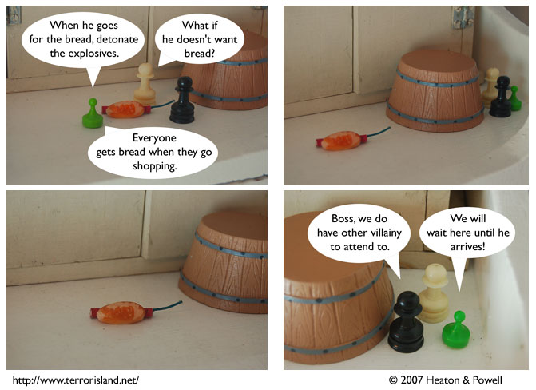

Strip #195
— Monday, September 10, 2007
Seriously, who goes shopping and doesn’t get bread?
Notes, Thoughts, &c.
Ben’s Notes
In all fairness, this scheme might actually work if Sid were interested in defying the ban placed on him. And if he didn’t notice the dynamite in the bread. And if he were the sort of person who’d take bread lying on the ground in front of a grocery store.
Actually, if it were any kind of store other than a grocery store, that last one might fit.
Lewis’s Notes
Ben’s wrong. The scheme wouldn’t work at all because Sid is on Atkins.